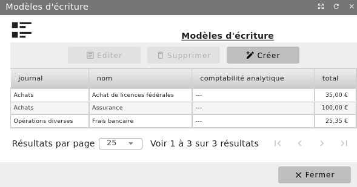
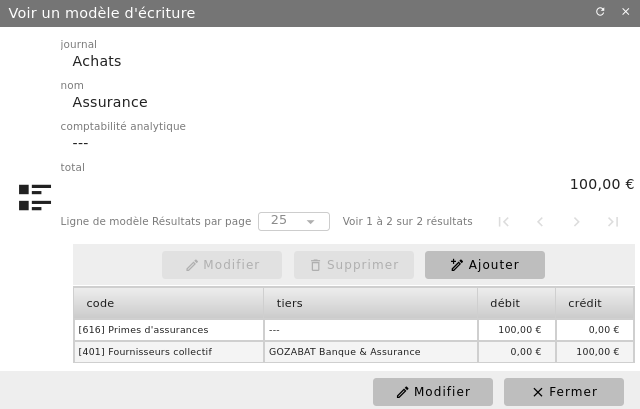
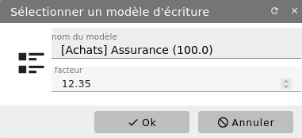

Modèle d’écriture¶
Déclaration d’un modèle¶
Certaines opérations sont régulièrement enregistrées. Pour soulager la saisie de celles-ci, un modèle d’écriture ou masque de saisie peut être créé et enregistré afin d’être utilisé ultérieurement en saisie. Un modèle d’écriture peut aussi être utilisé pour faciliter la comptabilisation d’opérations complexes.
Le modèle se présente comme une écriture.
Menu Comptabilité/Gestion comptable/Modèles d’écritures


Il est associé à un journal, contient un descriptif, précise les comptes à débiter et ceux à créditer, avec indication des montants qui ne peuvent pas être laissés nuls.


Nous vous conseillons de créer un modèle pour chacune de vos dépenses ou recettes règulières. Ainsi, vous gagnerez du temps sur la saisie de votre comptabilité et n’aurez pas à rechercher les bons codes comptables ni le sens des imputations.
Utilisation d’un modèle¶
L’utilisation d’un modèle est très simple.
En saisie d’écriture, cliquez sur le bouton « + Modèle ».


Sélectionnez votre modèle et précisez le coefficient multiplicateur qui devra être appliqué au montant présaisi dans le modèle. Ce facteur est très pratique lorsque l’on a des factures récurrentes mais dont le montant peut fluctuer. Il est alors possible, è l’aide de ce réel, de le faire varier. Validez votre sélection par « Ok ». Une écriture est générée d’après le modèle. Vous pouvez la corriger comme n’importe quelle écriture.